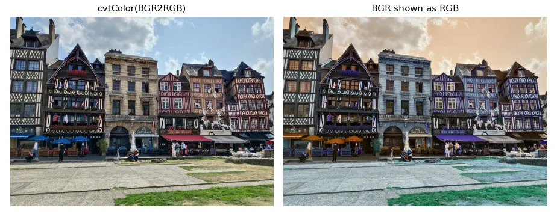
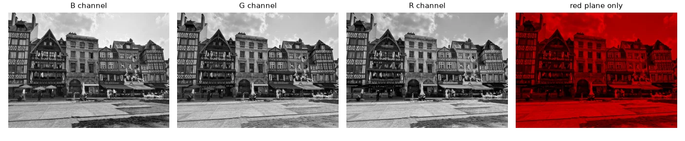
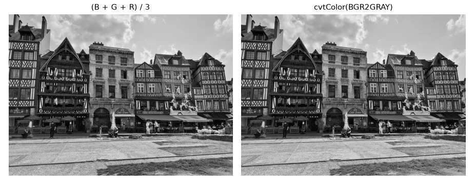
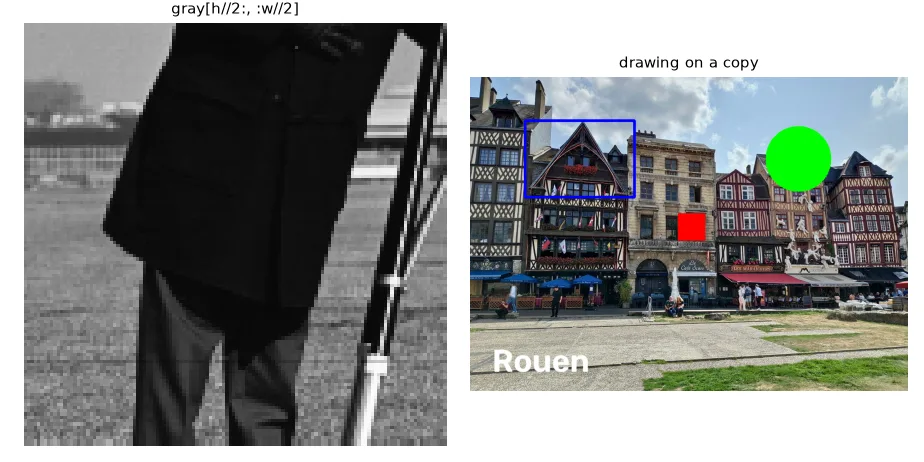
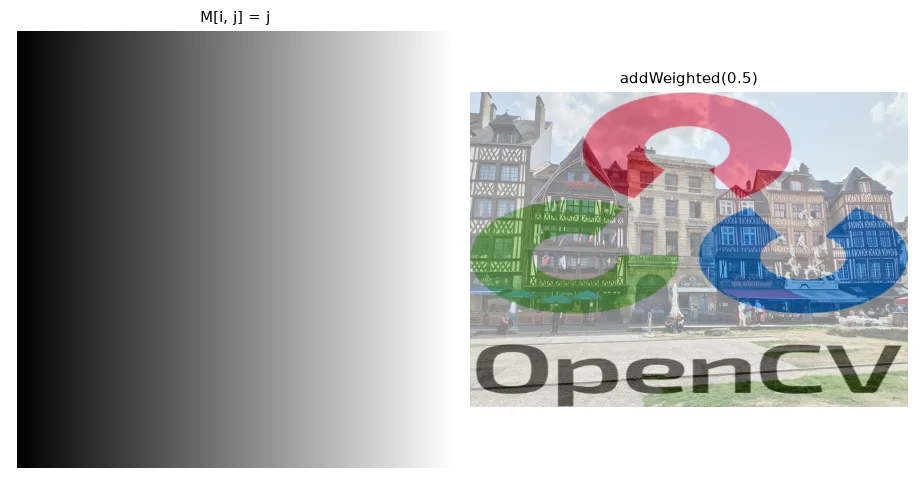
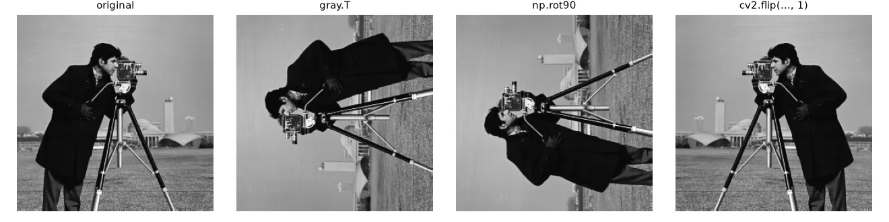

A picture is a matrix#
For a computer, a grayscale image of height \(H\) and width \(W\) is an \(H \times W\) matrix: element \((i, j)\) — row \(i\), column \(j\) — is the brightness of that pixel, usually an integer between 0 (black) and 255 (white). A colour image adds a third axis with one plane per channel, giving an \(H \times W \times 3\) array.
That is the whole secret: every algorithm in this course is "just" arithmetic on these arrays. So before touching an image, we need to be fluent with NumPy.
Data types: the bug factory#
Images are almost always stored as uint8: unsigned 8-bit integers, from 0 to 255. Arithmetic on uint8 wraps around silently:
a = np.full((2, 2), 255, dtype=np.uint8)
b = np.full((2, 2), 255, dtype=np.uint16)
print("uint8 255 + 1 ->", (a + 1)[0, 0]) # wraps around to 0
print("uint16 255 + 1 ->", (b + 1)[0, 0]) # 256, fits in 16 bits
print("cv2.add saturates ->", cv2.add(a, 1)[0, 0]) # stays at 255
print("safe NumPy sum ->", (a.astype(np.int32) + 1)[0, 0])
uint8 255 + 1 -> 0
uint16 255 + 1 -> 256
cv2.add saturates -> 255
safe NumPy sum -> 256
255 + 1 gives 0: a white pixel becomes black. This is why so many first attempts at "increase the brightness" produce strange black spots. Three ways out:
| Situation | What to do |
|---|---|
| You want to clip at 0 and 255 | Use OpenCV's saturating ops: cv2.add, cv2.subtract, cv2.addWeighted |
| You need negative or large intermediate values (derivatives, sums) | Convert first: img.astype(np.float32) (or np.int16), compute, then clip and convert back |
| You divide or average | Floats, always — integer division loses information |
Rule of thumb
Read in uint8, compute in float32, np.clip(…, 0, 255).astype(np.uint8) at the very end. We will meet this rule in nearly every lesson.
Masks: the end of nested loops#
A mask is a boolean array with the same shape as the image. Indexing with it selects (or writes) only the pixels where it is True:
A = np.random.randint(0, 10, (5, 5))
mask = A < 5 # boolean matrix, same shape as A
print(A[mask]) # 1-D array with the selected values
B = A.copy()
B[A < 5] = 0 # write through a mask
B[(A % 2).astype(bool)] -= 1 # odd values minus one
in_range = np.logical_and(A > 4, A < 7)
print(B, in_range, sep="\n")
A[mask] returns a 1-D array of the selected values, and B[A < 5] = 0 writes zero exactly where the condition holds. Combine conditions with &, |, ~ or np.logical_and/or/xor. Masks are how we will express thresholding, segmentation and filtering without writing for i in range(h): for j in range(w): — which is about 1000× slower in Python.
Reading an image with OpenCV#
gray = U.imread("basics/cameraman.tif", cv2.IMREAD_GRAYSCALE) # flag 0
color = U.imread("basics/rouen.jpg") # flag 1, BGR!
print("gray :", gray.shape, gray.dtype) # (256, 256) uint8
print("color:", color.shape, color.dtype) # (576, 800, 3) uint8
print("pixel (50, 100):", gray[50, 100]) # row 50, column 100
b, g, r = color[0, 0] # first pixel, in B, G, R order
The second argument of cv2.imread selects the mode: cv2.IMREAD_GRAYSCALE (0), cv2.IMREAD_COLOR (1, the default) or cv2.IMREAD_UNCHANGED (-1, keeps 16-bit depth and the alpha channel). Two traps:
cv2.imreadreturnsNoneinstead of raising an error when the path is wrong. The course helperU.imreadraises a clearFileNotFoundErrorinstead.img.shapeis(height, width, channels), but most OpenCV functions that take a size want(width, height). And pixel access isimg[row, col]— that isimg[y, x]— while drawing functions take points as(x, y).
BGR, not RGB#
For historical reasons OpenCV loads colour images with the channels in Blue, Green, Red order. Matplotlib (and almost everything else) expects RGB. Forget the conversion and your sky turns orange:
wrong = color[:, :, ::-1] # what Matplotlib "sees" if we forget the conversion
rgb = cv2.cvtColor(color, cv2.COLOR_BGR2RGB)

Channels#
blue, green, red = cv2.split(color)
only_red = color.copy()
only_red[:, :, 0:2] = 0 # zero the B and G planes

From colour to gray#
The naive gray level is the mean of the three channels, but our eyes are much more sensitive to green than to blue. The standard (ITU-R BT.601) luma weights them:
f = color.astype(np.float32)
gray_mean = (f[:, :, 0] + f[:, :, 1] + f[:, :, 2]) / 3
# ITU-R BT.601 luma: the eye is most sensitive to green, least to blue
gray_luma = 0.114 * f[:, :, 0] + 0.587 * f[:, :, 1] + 0.299 * f[:, :, 2]
gray_cv = cv2.cvtColor(color, cv2.COLOR_BGR2GRAY)
print("max |luma - cv2|:", np.abs(gray_luma - gray_cv).max()) # < 1, just rounding
cvtColor(…, COLOR_BGR2GRAY) uses exactly these weights — our manual version differs by at most 0.5, which is just rounding. Note the result types: the manual one is float32, OpenCV's is uint8.

Regions of interest and drawing#
Slicing returns a view: no data is copied, and writing into the slice writes into the original image. Use .copy() when you want an independent crop.
h, w = gray.shape
quarter = gray[h // 2:, : w // 2] # bottom-left quarter: a *view*, no copy
quarter_copy = gray[h // 2:, : w // 2].copy()
canvas = color.copy()
canvas[250:300, 380:430] = (0, 0, 255) # paint a red square (BGR)
cv2.rectangle(canvas, (100, 80), (300, 220), (255, 0, 0), 4)
cv2.circle(canvas, (600, 150), 60, (0, 255, 0), -1)
cv2.putText(canvas, "Rouen", (40, 540), cv2.FONT_HERSHEY_SIMPLEX, 2, (255, 255, 255), 4)

Synthetic images, blending and simple transforms#
ramp = np.tile(np.arange(256, dtype=np.uint8), (256, 1)) # M[i, j] = j
logo = U.imread("basics/logo_color.png")
logo = cv2.resize(logo, (color.shape[1], color.shape[0]))
alpha = 0.5
blend_np = (alpha * color + (1 - alpha) * logo).astype(np.uint8) # float math, then cast
blend_cv = cv2.addWeighted(color, alpha, logo, 1 - alpha, 0)

transposed = gray.T # rows become columns
rot90 = np.rot90(gray) # counter-clockwise rotation
flipped = cv2.flip(gray, 1) # mirror around the vertical axis

Exercises#
- Write
brightness(img, delta)with plain NumPy that does not wrap around. Compare withcv2.add. - Using only masks, set to white every pixel of
rouen.jpgwhose red channel is larger than both the green and the blue channels. What did you select? - Time
gray[i, j]in a double loop againstgray_cvfor the whole image (time.perf_counter). How many times faster is the vectorised version?